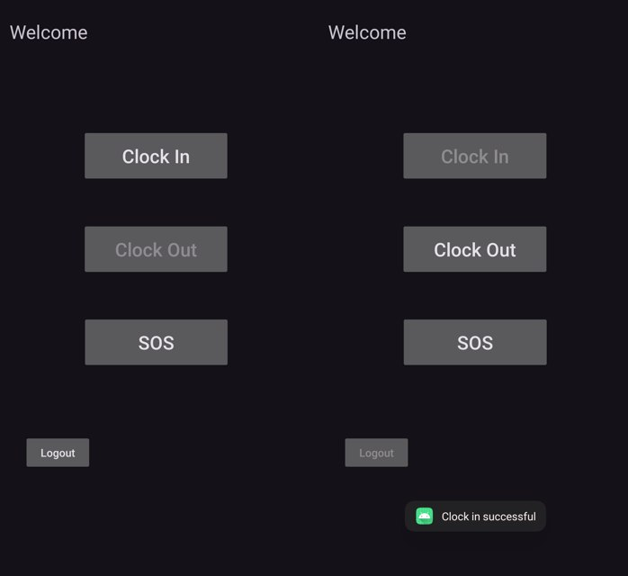
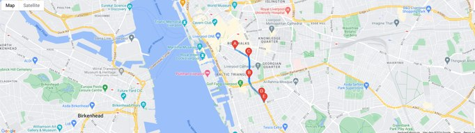

Outdoor Worker Location Tracker
The problem: supervisors of outdoor workers, such as field engineers, surveyors and lone workers, had no reliable way to see where their people were or whether they were safe, in real time.
What I built
- A native Android app in Kotlin with Google Sign-In. Workers clock in and out, and their location syncs in the background without the app needing to stay open.
- An SOS button that flags an emergency straight to the supervisor.
- A web dashboard in HTML, CSS and JavaScript showing every active worker on Google Maps, with live positions and route history.
- A Firestore data model that serves both live tracking and route playback from the same data, synced through live listeners so nothing needs a refresh.
AndroidKotlinJavaScriptFirebase AuthCloud FirestoreGoogle Maps APIWorkManager


Engineering decisions and architecture
- Chose WorkManager over an always-on foreground service, trading a little real-time precision for much better battery life and compliance with Android's background limits.
- Adapted the sync strategy to cope with background restrictions that differ between Android versions, instead of relying on one implementation.
- Evaluated with unit tests and user testing against functional and non-functional requirements for accuracy, reliability and usability.